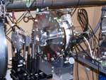

Ｘ線天体の観測を目指すＸ線偏光計のテスト実験に参加（2006年10〜11月）
Ｘ線天体の観測を目指すＸ線偏光計のテスト実験に参加（2006年10〜11月）
中村研は，理化学研究所の平賀博士と共に自ら発明したBP-1ガラスマルチコリメータを用いてＸ線CCDのR&Dを行なっていますが，この研究にも参考になる点が多いことから，両研究は相まってＸ線検出技術を強力に推進し将来のＸ線天文学に貢献することが期待されます。
|
| 10月下旬から11月上旬まで，理化学研究所の牧島宇宙放射線研究室の玉川グループが高エネルギー加速器研究機構の放射光施設で約１週間行なったＸ線偏光計のテスト実験に，中村，院生および４年生が参加し，全面的に協力しました。 中村研は，理化学研究所の平賀博士と共に自ら発明したBP-1ガラスマルチコリメータを用いてＸ線CCDのR&Dを行なっていますが，この研究にも参考になる点が多いことから，両研究は相まってＸ線検出技術を強力に推進し将来のＸ線天文学に貢献することが期待されます。 |
|  |